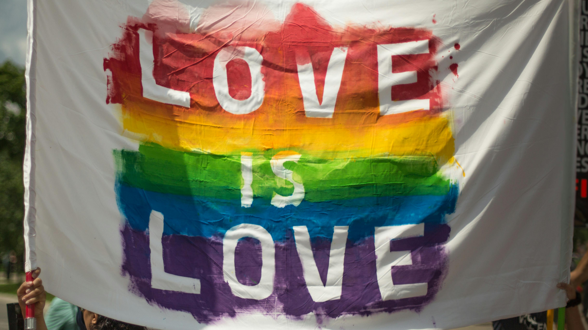
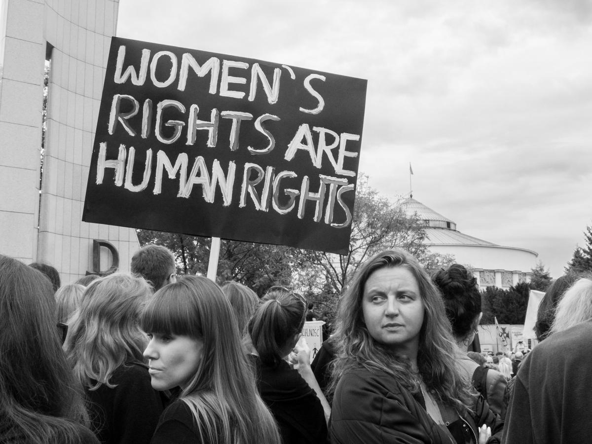

1848 - Women's Suffrage Movement Begins
The first women's rights convention is held in Seneca Falls, New York.
Explore the social movements that shaped history.
Fought against racial discrimination and for equal rights in the United States, leading to historic legislation like the Civil Rights Act of 1964.
Advocates for the recognition, legal protection, and societal acceptance of transgender individuals across the world.
Fights for gender equality, reproductive rights, workplace rights, and freedom from gender-based violence.
The first women's rights convention is held in Seneca Falls, New York.
Women in the U.S. gain the right to vote after decades of activism.
U.S. Supreme Court declares racial segregation in public schools unconstitutional.
Rosa Parks refuses to give up her seat, sparking the Montgomery Bus Boycott.
Martin Luther King Jr. delivers his historic speech during the March on Washington.
Bans segregation in public places and employment discrimination based on race or gender.
A pivotal moment in LGBTQ+ rights history, sparking the modern pride movement.
The American Psychiatric Association removes homosexuality from its list of mental disorders.
The U.S. Supreme Court legalizes abortion, advancing women's reproductive rights.
The U.S. Supreme Court rules in Obergefell v. Hodges, granting same-sex couples the right to marry.
President Barak Obama strengthens anti-discrimination protections for LGBTQIA+ individuals.
The Me Too movement gains global attention, advocating against sexual harassment and abuse.